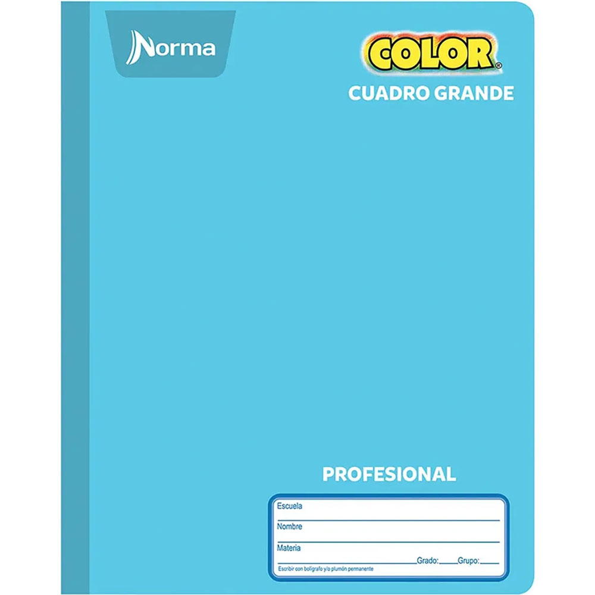
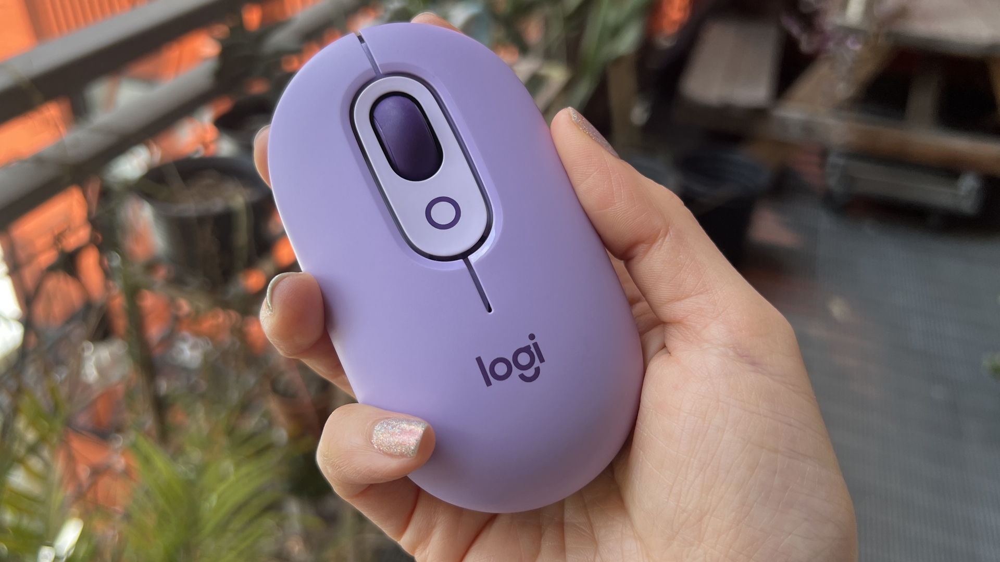
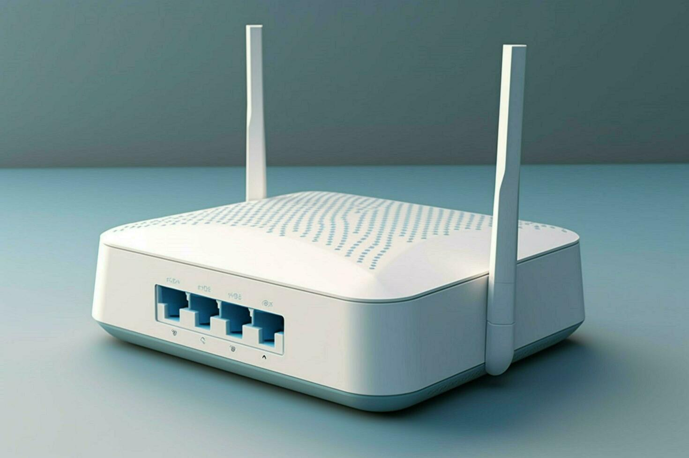

Bienvenido a la madriguera
Explora el wonderland de los objetos perdidos
Descubre, reporta y recupera objetos en el pais de las maravillas.
Comienza ahoraObjetos Encontrados

Encontrado
Objeto 2
Este elemento fue encontrado en Y. Despues de que se realizó la exploración. detallada de cerca de 10,000 metros cuadrados en el interior de ya no sé que poner quiero llegar al limite de la tarjeta pero es bastante espacio el que tiene, olvidenlo ya llegué al final
Ver más
Perdido
Tercer Objeto
Este elemento fue encontrado en Z. TESTESTESTESTETSETESTSETESTESETETSETSTESTSETETSSETESTESTSETETTETESESESE
Ver másCaja del caballero blanco
¿Encontraste un objeto perdido? ¡Reporta aquí!